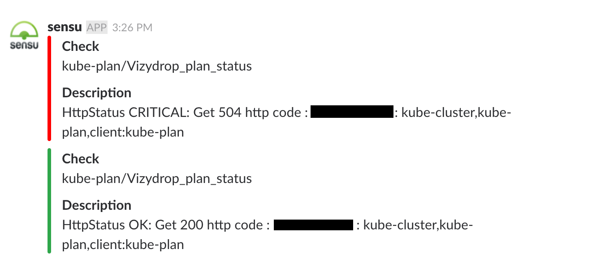

Компания Targetprocess
Микросервисы — современное представление сервис-ориентированной архитектуры (SOA), используемое для создания распределенных программных систем. Как и в SOA, модули в архитектуре микросервисов взаимодействуют по сети друг с другом для выполнения цели. Ещё одно сходство в том, что микросервисы используют протоколо-независимую технологию. Данная архитектура является первой реализацией SOA, появившейся после внедрения DevOps, и она постепенно становится стандартом для непрерывно развивающихся систем
Wikipedia44 опции в версии GNU
В компьютерных науках есть две сложности: инвалидация кэша, именование и ошибка на единицу.


Выбирайте тот инструмент, который знает большинство в команде, если нет специфики задачи, которая определяет выбор.
helm/
src/
...
package.json
manage.sh
Dockerfile
FROM node:8.9.3-alpine
WORKDIR /trellopro
RUN yarn global add pm2@2.9.1
COPY package.json yarn.lock ./
RUN yarn install #создаем слой для зависимостей
COPY . . #создаем слой приложения
ENTRYPOINT ["sh", "manage.sh"]
#!/usr/bin/env sh
set -e;
case "$1" in
run-server)
pm2-docker start --raw app/process.yaml
;;
run-tests)
yarn run lint-teamcity
yarn run test-teamcity
;;
*)
echo "Usage: manage.sh {run-server|run-tests}"
exit 1
esac
exit 0
object TrelloBuild : BuildType({
steps {
script {name = "docker: build image"}
script {name = "docker: run tests"}
script {name = "docker: run integration-tests"}
script {name = "docker: run e2e-tests"}
script {name = "docker: push"}
script {name = "helm: package (trello)"}
script {name = "helm: publish"}
}
})
Конфигурация запуска тестов хранится в отдельном репозитории, а лучше бы в репозитории сервиса.
curl -s
http://copmoser/compose/sourcestore/up/(tests|build|e2e)
> sourcestore.compose.tests.yml
version: 3
services:
dataparser:
image: *company*/dataparser:master # всегда master
sourcestore:
command: run-tests
depends_on:
- postgres
...
image: ci_sourcestore:latest
spec:
replicas: {{ .Values.replicas }}
template:
spec:
containers:
- name: trello
image: {{ .Values.image.name -}}:{{- .Values.image.tag }}
env:
- name: ENV_REDIS_HOST
value: {{ required "'redis.host' is required" .Values.redis.host }}
- name: TRELLO_CLIENT_ID
valueFrom:
secretKeyRef:
name: trello
key: id
dependencies:
- name: hogwarts
version: 1.0.0-develop-10614
repository: https://repository/helm-charts
- name: trello-proxy
version: 1.0.0-develop-10614
repository: https://repository/helm-charts
...


If you can’t build a well-structured monolith, what makes you think microservices is the answer?